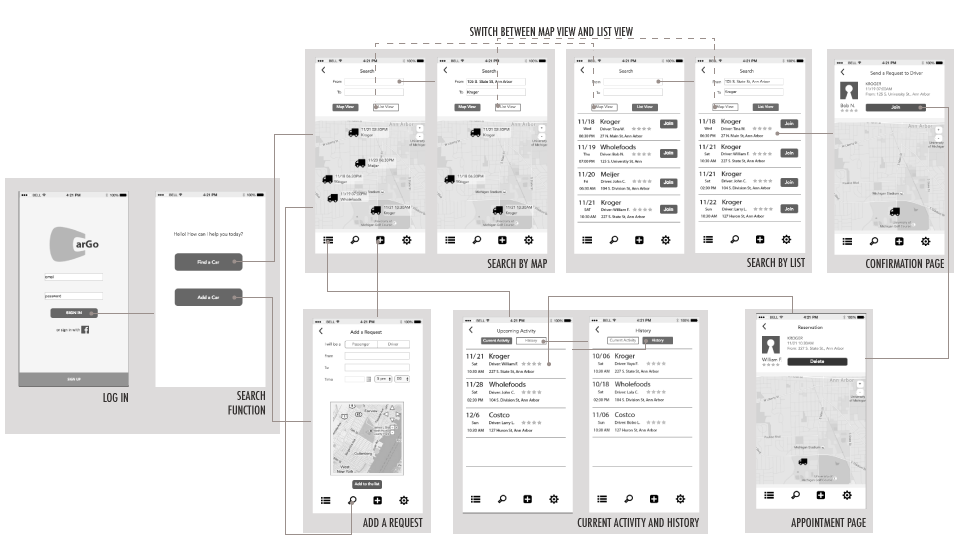

Project Overview
This is an individual project that aimed to help students to find a convenient way of grocery shopping. The project contains a thorough process of interaction design from need finding to prototype.
Time
Sept. - Dec. 2015
Role
UX designer
UX researcher
Project Manager
Tools
Axure
Photoshop
Illustrator
UX Method
Competitive analysis
Personas
Sketching
QOC analysis
Paper prototyping
Digital Prototyping
Design Process

Problem Scoping
Interview
Through 6 interviews, I found that grocery shopping was a big problem for students who did not have a car and lived far from the grocery store.
Transportation

Package Size
Analysis
Persona
Based on the result of interviews, I made 4 personas including 3 user personas and 1 non-user persona. Personas helped me think through the motivations, needs and frustrations of the possible users.


Comparative Analysis
I compared 3 kinds of services to find the possible solution of my problem statement, and also tried to discover the niche for new solution.

Core Value
With the information from interview, personas and comparative analysis, I defined the three core values of grocery shopping as below:

Price
While most of the potential users are international students, they might want a service with reasonable price.
Efficiency
Users want a solution that can save their time in transportation.

Experience
Users still enjoy the experiences of grocery shopping.
Ideation
Based on the previous information, I sketched 10 different solutions with various approaches. I then presented the sketches to the potential users to receive their feedbacks.
Insights from Potential Users
- The problem of transportation is more prominent than the problem of package size.
- People are skeptical about sharing food with others.
Final Decision of the Solution
Among the 10 solutions I proposed, the idea of shared car is favored by most potential users.

Defining Design Dimensions
QOC
After deciding the final solution, the next step was defining the key functions of the solution. I used QOC method to specify the details of each key function.
Based on the QOC analysis, the following features were selected for the final design.
- Users have to log in before using the system.
- Information will be presented by a list and a map view.
- Only landmarks and intersections can be the pick-up location.
- The system will provide different interfaces to the drivers and the passengers.
- The system will automatically match the passenger and the driver. However, the driver has the flexibility to make an adjustment.
Prototype
Paper Prototype
The prototype of shared car service was built by paper first.
Discovery
Two main confusions were found by the testing:
- Users were confused about the differences between functions for a driver and for a passenger.
- Some of the buttons cannot clearly link to their functions.
Reflection
The major problem of paper prototype was that users tended to have good experience as long as every step they took resulted in a response. This makes it harder for user to discover the problems of interaction.
Mid-fi Prototype/Interaction Map
Interaction map was built to visaulize the steps of interaction. Digital mid-fi prototype was also built and tested by users.
Digital Prototype and Reflection
In the final digital prototype, I separate the interface of driver and passenger, however the users still felt confused between the function for driver and user. I realized that I had blind spot because I was too familiar with my design. I thought the linkages between figure icons and functions should be clear and intuitive, but the feedbacks from first-time user made me examine every signifier in my design. I also rearranged the location of some buttons. For example, I put the “map view” at the top right corner for user to change from list view to map view. However, some people might think that button represent the current mode because of its location. I also took out the function that drivers could actively add passengers into the car, because user feedback showed that drivers preferred the importing passenger from the system rather than finding passengers on their own.